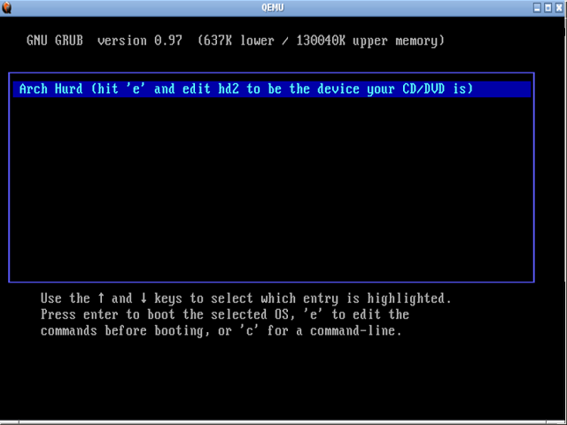
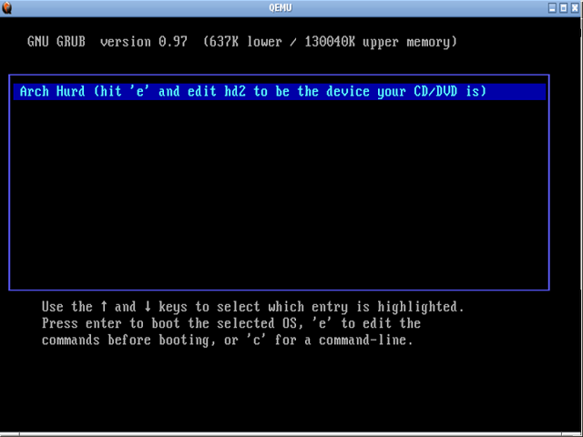

Prueba el kernel original de GNU':' HURD
Esta ocasión me gustaría extender una invitación a probar (sin cambiar nada en su sistema actual)…
Mi SO favorito: GNU

Mi distribución favorita de GNU: Arch

Pero esta vez con el kernel de GNU HURD en lugar del kernel Linux
Lo que haremos será descargar la imagen del Live CD de Arch HURD desde su pagina oficial
O descargarla directamente de aquí
SHA1 SUM = 7541d962fe3a50a7ab938e895ab8b550b2a38580
Una vez la tengamos procedemos a probarla haciendo uso de una maquina virtual con QEMU hacemos:
qemu-system-i386 -cdrom i686-core-2011-08-17.iso
Reemplazando i686-core-2011-08-17.iso por el nombre de la imagen que descargamos.
Con esto aparecerá una ventana con la maquina virtual que ejecutara el Live CD (para desligar el mouse de dicha ventana presionamos: crtl + alt)

El objetivo de este post es compartir con ustedes el placer de probar el kernel propio de GNU aún antes de el lanzamiento de su tan esperada versión estable, espero les agrade y jueguen mucho con el.
PD: Si lo preferimos podemos quemar la imagen en un CD y probarlo de la manera tradicional
PD2: En caso de no tener instalado QEMU:
Arch: pacman -S qemu
Fedora: yum install qemu
Debian-Ubuntu: apt-get install qemu
Esta ocasión me gustaría extender una invitación a probar (sin cambiar nada en su sistema actual)…
Mi SO favorito: GNU
Mi distribución favorita de GNU: Arch
Pero esta vez con el kernel de GNU HURD en lugar del kernel Linux
Lo que haremos será descargar la imagen del Live CD de Arch HURD desde su pagina oficial
O descargarla directamente de aquí
SHA1 SUM = 7541d962fe3a50a7ab938e895ab8b550b2a38580Una vez la tengamos procedemos a probarla haciendo uso de una maquina virtual con QEMU hacemos:
qemu-system-i386 -cdrom i686-core-2011-08-17.isoReemplazando i686-core-2011-08-17.iso por el nombre de la imagen que descargamos.
Con esto aparecerá una ventana con la maquina virtual que ejecutara el Live CD (para desligar el mouse de dicha ventana presionamos: crtl + alt)

El objetivo de este post es compartir con ustedes el placer de probar el kernel propio de GNU aún antes de el lanzamiento de su tan esperada versión estable, espero les agrade y jueguen mucho con el.
PD: Si lo preferimos podemos quemar la imagen en un CD y probarlo de la manera tradicional
PD2: En caso de no tener instalado QEMU:
Arch: pacman -S qemu
Fedora: yum install qemu
Debian-Ubuntu: apt-get install qemu